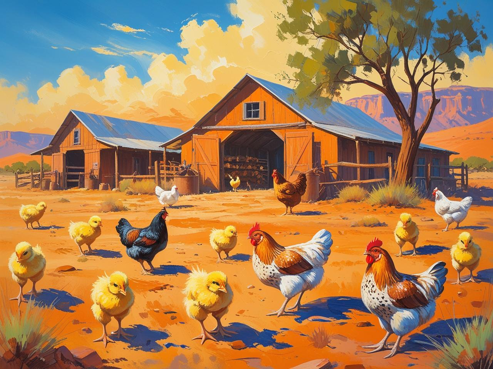

El nuevo pollito

Un pollito nació en una granja, cerca de un inmenso desierto muy bonito, y cuando nació tenía un color un poco extraño.
Su color era un pollito de color naranja y era muy listo. Por suerte, su mamá y su familia lo querían muchísimo. Tanto que era el hijo "favorito" y hacían un montón de cosas: el pilla-pilla, el escondite y un montón de juegos más.
Su color era un pollito de color naranja y era muy listo. Por suerte, su mamá y su familia lo querían muchísimo. Tanto que era el hijo "favorito" y hacían un montón de cosas: el pilla-pilla, el escondite y un montón de juegos más.
Escuchar cuento